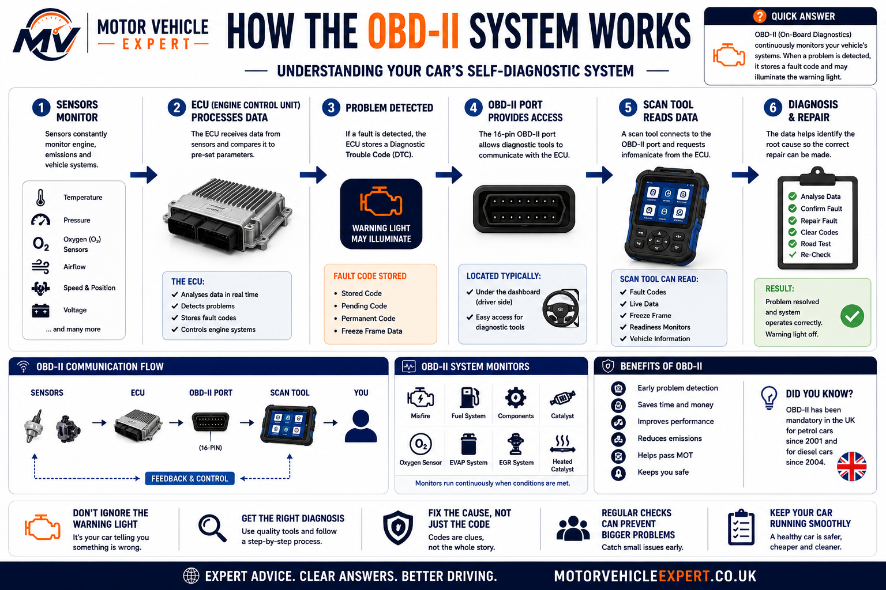
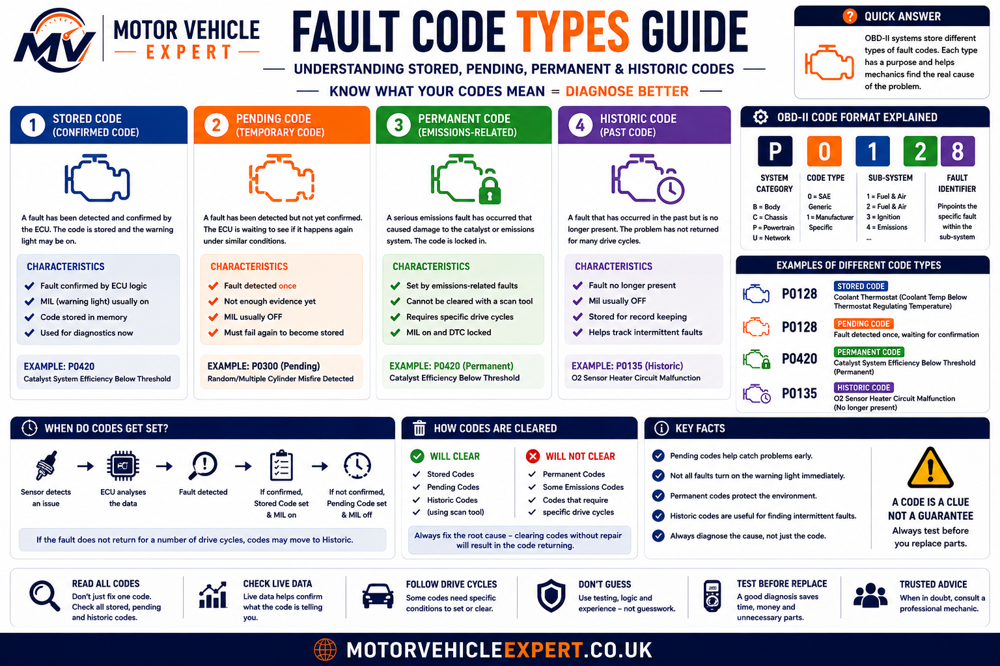
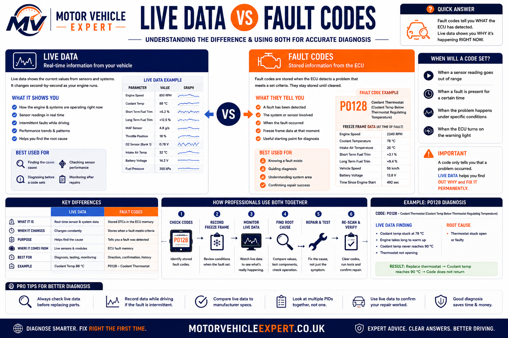
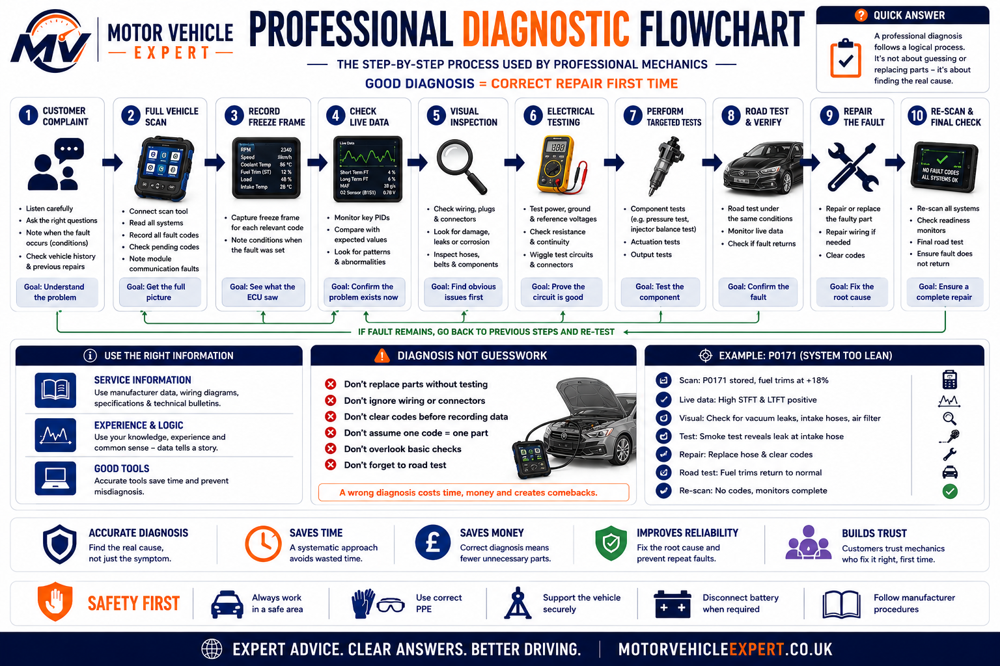

What does car diagnostics actually involve?
Car diagnostics is the structured process of finding the real cause of a vehicle fault. It may begin with a dashboard warning light, unusual noise, poor performance, starting problem, electrical fault or stored diagnostic code, but the scan result is only the beginning of the investigation.
A professional technician combines the driver's description, vehicle history, a full control-module scan, freeze-frame information, live sensor readings, visual inspection, electrical measurements, mechanical tests and a road test. The aim is to prove which system has failed before parts are replaced.
Record The Symptoms
The technician confirms what the vehicle is doing, when the problem occurs and whether temperature, speed, load or weather affects it.
Scan Every Relevant Module
Stored, pending, permanent and manufacturer-specific codes may reveal how several systems are connected.
Confirm The Root Cause
Live data, wiring checks, pressure measurements and component tests are used to prove why the fault developed.
Verify The Repair
The vehicle is rechecked under the original fault conditions to confirm that the symptom and code do not return.
Do not ask only, “What code is stored?” Ask, “What operating condition caused the control module to store it?” That question leads to diagnosis rather than parts guessing.
What professional diagnosis looks like in practice
In real workshop diagnosis, the fault described by the driver is often more useful than the first code displayed by the scanner. A car may hesitate only when cold, cut out after warming up, lose power under load or illuminate several warning lights after the battery voltage drops. Those details determine which tests should come next.
A technician may find six stored codes but discover that all six were caused by one poor earth connection, damaged wiring loom, intake leak or low-voltage event. Treating each code as a separate failed component would create unnecessary parts costs and may not repair the vehicle.
Good diagnostics therefore follows evidence. The technician records the complaint, checks whether the fault can be reproduced, saves the electronic data, inspects the system and only then chooses the most relevant tests.
Example: Lean Mixture Code
A P0171 code may be caused by an intake leak, low fuel pressure, contaminated airflow sensor, exhaust leak or incorrect sensor data. Replacing the oxygen sensor first may not solve the problem.
Example: Catalyst Efficiency Code
A P0420 code may follow previous misfires, oil consumption, exhaust leakage or incorrect fuel mixture. Catalyst replacement should not be authorised until those causes are checked.
Example: Crank Sensor Code
A P0335 code may indicate the sensor, wiring, connector, reluctor ring, timing fault or low cranking voltage. Live engine-speed data helps narrow the cause.
Example: Low Voltage Codes
Several communication and sensor codes appearing together may result from a weak battery, charging fault or poor earth rather than multiple control modules failing at once.
Diagnostic time is not simply the time required to plug in a scanner. The valuable part is interpreting the evidence, selecting the correct tests and proving which repair will solve the complaint.
What are vehicle diagnostics?
Vehicle diagnostics covers every method used to identify faults in mechanical, electrical, electronic, hydraulic, pneumatic and software-controlled systems. Modern cars contain dozens of control modules that exchange information while monitoring engine operation, emissions, transmission behaviour, braking, steering, restraint systems, lighting, comfort functions and driver assistance.
Electronic self-monitoring is extremely useful, but it does not replace traditional mechanical knowledge. A scan tool cannot always detect a worn wheel bearing, restricted exhaust, weak fuel pump, damaged suspension bush, vacuum leak or intermittent wiring fault unless that problem affects a monitored signal.
Codes, Modules And Data
Scan tools communicate with control modules to retrieve fault codes, operating data, software information and test results.
Voltage, Current And Resistance
Multimeters, oscilloscopes and circuit tests confirm whether sensors, actuators, wiring and grounds are operating correctly.
Pressure, Flow And Condition
Compression, fuel pressure, vacuum, smoke, cooling-system and physical inspections reveal faults that codes alone cannot prove.
The best diagnosis combines electronic evidence with physical testing. Neither fault codes nor mechanical inspection should be used in isolation when the vehicle relies on both systems working together.
How modern car diagnostics work
Sensors continuously measure conditions such as temperature, pressure, airflow, oxygen content, wheel speed, steering angle, battery voltage and component position. Control modules compare those signals with programmed values and with information received from other modules.
When a reading becomes implausible, remains outside its expected range or causes a monitored system to fail a self-test, the relevant module may store a diagnostic trouble code. Depending on the seriousness and confirmation criteria, it may also illuminate a warning light, limit performance or place the vehicle into a protective operating mode.
1. Sensors Measure Conditions
Sensors report temperature, speed, pressure, airflow, position, voltage and many other operating values.
2. Control Modules Analyse Data
The ECU and other modules compare signals with programmed limits and expected relationships.
3. A Fault Is Detected
A signal may be too high, too low, missing, implausible or inconsistent with another monitored value.
4. Diagnostic Evidence Is Stored
The module may save a code, freeze-frame snapshot, test status and warning-light request.

Sensors supply the vehicle with operating information, control modules process that information and the OBD system stores evidence when monitored behaviour falls outside the expected range.
A control module can only judge the information available to it. A sensor may report believable but incorrect data, a mechanical problem may not trigger a code, and a fault may need specific driving conditions before the module can detect it.
What is the OBD-II system?
OBD-II means On-Board Diagnostics, second generation. It provides a standardised way for compatible diagnostic equipment to communicate with emissions-related and powertrain systems through the vehicle's diagnostic connector.
The standard makes many generic engine and emissions codes readable across different manufacturers. However, modern diagnostic systems extend far beyond the basic OBD-II engine functions. ABS, airbags, body electronics, transmission, steering, battery management and driver-assistance modules may require manufacturer-capable equipment.
Standard Communication Point
The diagnostic socket allows a compatible tool to request information from control modules without dismantling the vehicle.
Engine And Emissions Information
Generic tools commonly read powertrain codes, selected live data, freeze-frame information and emissions monitor status.
Manufacturer-Level Systems
Advanced tools may access ABS, airbag, transmission, body, security, service and manufacturer-specific test functions.
What Basic OBD-II Can Usually Provide
- ✓Generic powertrain fault codes.
- ✓Pending and permanent emissions codes.
- ✓Selected live engine data.
- ✓Freeze-frame information.
- ✓Readiness-monitor status.
- ✓Warning-light command status.
What May Need Advanced Equipment
- ✓ABS and electronic parking brake systems.
- ✓Airbag and restraint modules.
- ✓Automatic transmission data and adaptations.
- ✓Body, comfort and lighting modules.
- ✓Actuator tests and coding functions.
- ✓Manufacturer-guided diagnostic procedures.
A tool that reads the engine ECU may still be unable to access the gearbox, ABS, airbag or body systems. Always confirm which modules and functions the diagnostic equipment supports for the exact vehicle.
Control modules and communication networks
Modern vehicles use multiple electronic control units rather than one computer controlling everything. Each module specialises in a particular system, while communication networks allow those modules to share information.
The engine ECU may need vehicle speed from the ABS module, gear information from the transmission module and air-conditioning demand from the climate module. One missing network message can therefore affect several systems and generate multiple warning lights.
Engine Control Module
Controls fuel delivery, ignition, emissions, boost, idle speed and many engine-protection strategies.
Gearbox Control Module
Monitors gear selection, clutch or pressure control, speed sensors, shift quality and transmission temperature.
ABS And Stability Module
Uses wheel-speed, steering-angle and acceleration information to control ABS, traction and stability functions.
Airbag Control Module
Monitors impact sensors, seat-belt pretensioners, occupancy systems and restraint-circuit condition.
Body Control Module
May control lighting, locking, wipers, windows, alarm, interior electronics and communication with other modules.
Gateway Module
Routes communication between different vehicle networks and may store faults when messages are missing or invalid.
If a shared sensor, power supply, earth connection or network message fails, several modules may store related codes. The full vehicle scan must be analysed as one connected fault pattern rather than a list of unrelated component failures.
How vehicle sensors monitor the car
Sensors convert physical conditions into electrical information that control modules can understand. Some measure temperature or pressure, while others detect speed, movement, chemical content, component position or electrical current.
A single sensor value is rarely interpreted alone. Control modules compare several readings to decide whether each one is plausible. Engine speed may be compared with camshaft position, airflow with throttle opening, oxygen-sensor response with fuel trims and wheel speed with steering and stability data.
MAF And MAP Sensors
Measure intake airflow or manifold pressure to support fuel, boost and load calculations.
Coolant And Intake Sensors
Report engine and intake-air temperature for warm-up strategy, fuel control and system protection.
Crankshaft And Camshaft Sensors
Provide timing, engine-speed and cylinder-position information required for starting and running.
Oxygen And Air-Fuel Sensors
Help the ECU monitor combustion mixture and catalyst operation.
Wheel-Speed And Steering Sensors
Supply data for ABS, traction control, stability systems, steering assistance and some gearbox functions.
Battery And Current Sensors
Monitor battery condition, charging demand and electrical energy management.
Modern diagnostics depends on understanding how sensor signals interact. An implausible reading may be caused by the sensor itself, its wiring, its power supply, the measured system or information received from another module.
Before replacing a sensor, confirm its power supply, earth, signal circuit, physical operating condition and agreement with other relevant data. A correct-looking fault description does not prove the sensor is defective.
What P, B, C and U fault codes mean
Diagnostic trouble codes are grouped by the type of system involved. The first character provides a broad direction, but it does not confirm the failed part. A complete scan may show codes from several families because modern systems share sensors, power supplies and communication networks.
Powertrain
Cover engine, emissions, fuel delivery, ignition, turbocharging and transmission-related systems.
Body Systems
May relate to airbags, climate control, central locking, lighting, seats, windows and interior electronics.
Chassis Systems
Commonly involve ABS, steering, suspension, wheel-speed sensors, stability control and braking systems.
Network Communication
Indicate missing, invalid or interrupted communication between vehicle control modules.
A low-voltage event, damaged wiring loom, failed gateway or shared sensor can generate P, C and U codes at the same time. Analyse the full pattern and the order in which the faults were stored before replacing components.
Generic vs manufacturer-specific fault codes
Generic codes follow standard definitions shared across many manufacturers. Manufacturer-specific codes provide additional detail for systems, strategies and components unique to a particular vehicle or engine family.
A basic code reader may display only a generic description, while a manufacturer-capable scanner can reveal subcodes, fault status, test values and guided procedures that make diagnosis far more accurate.
Generic Codes
- ✓Standardised across many vehicles.
- ✓Often begin with P0, B0, C0 or U0.
- ✓Usually accessible with basic OBD equipment.
- ✓Useful for broad system direction.
- ✓May provide limited manufacturer detail.
Manufacturer-Specific Codes
- ✓Defined by the vehicle manufacturer.
- ✓Often begin with P1, B1, C1 or U1.
- ✓May require enhanced scanner access.
- ✓Can include subcodes and failure types.
- ✓Should be checked against official service data.
The same-looking code may have different test conditions or diagnostic steps across manufacturers. Confirm the exact definition, module, engine code and failure status before authorising repairs.
Stored, pending, permanent and historic fault codes
Fault-code status helps explain whether a problem has happened once, has been confirmed repeatedly, is still active or has occurred previously. Reading the status correctly can prevent intermittent faults from being dismissed and old faults from being mistaken for current failures.
Fault Seen But Not Yet Confirmed
The module has detected a problem but may need the fault to occur again before illuminating a warning light.
Confirmed Diagnostic Code
The fault has met the module's confirmation criteria and is retained in memory.
Emissions Code Awaiting Verification
The code remains until the vehicle completes the required monitor and confirms that the repair is successful.
Previous Or Intermittent Fault
The problem is not currently active but remains recorded as useful evidence of an earlier failure.

Code status helps establish whether the fault is developing, confirmed, awaiting repair verification or recorded from an earlier event.
Record the code number, module, status, mileage, freeze-frame information and warning-light state. Clearing the memory too early can remove the strongest evidence available for an intermittent fault.
What freeze-frame data tells a mechanic
Freeze-frame data is a snapshot of vehicle operating conditions captured when a control module stores a fault. It can show whether the problem happened during cold start, idle, acceleration, motorway driving, heavy load or another specific condition.
Not every scanner displays the same information, but a useful freeze frame may include engine speed, vehicle speed, coolant temperature, engine load, fuel trims, airflow, throttle position, battery voltage and intake temperature.
Cold Or Fully Warm?
Coolant and intake temperature help show whether the fault occurred during warm-up or normal operation.
Idle Or Acceleration?
Load, throttle and airflow readings reveal whether the fault occurred under light or heavy demand.
Stationary Or Moving?
Vehicle speed and engine RPM help recreate the conditions under which the module detected the problem.
Lean Or Rich Correction?
Fuel trims can reveal whether the ECU was adding or removing fuel when the fault occurred.
Was Voltage Stable?
Recorded system voltage may reveal a battery or charging event behind several unrelated codes.
Recreate The Same Conditions
The technician can use the snapshot to reproduce the fault safely during testing or a road test.
Once freeze-frame information is erased, the technician may lose the only record showing exactly when the fault occurred. This can turn a straightforward diagnosis into a much longer intermittent-fault investigation.
What are readiness monitors?
Readiness monitors are self-tests used by the vehicle to check whether emissions-related systems have completed their diagnostic routines. They do not mean the vehicle is fault-free; they show whether each monitor has run under the required operating conditions.
Clearing fault codes or disconnecting the battery can reset monitors to “not ready”. The vehicle may then need a combination of cold starts, steady driving, acceleration, deceleration and warm operation before every monitor completes again.
Monitor Has Run
The system has completed its self-test since codes were last cleared or power was interrupted.
Test Conditions Not Completed
The required drive cycle or operating condition has not yet occurred.
Monitor Not Used By Vehicle
The vehicle may not be equipped with that monitored system or strategy.
A code may stay away immediately after clearing because the relevant monitor has not yet run. The repair should only be considered confirmed after the vehicle completes the appropriate monitor without the fault returning.
Live data vs fault codes
Fault codes show what condition the control module detected. Live data shows what the sensors and systems are doing now. Used together, they allow the technician to compare the stored complaint with current vehicle operation.
A code may point towards an airflow problem, but live MAF, MAP, throttle and fuel-trim readings help explain whether the cause is an air leak, restricted intake, sensor error or fuel-delivery fault.
Tell You What Was Detected
- ✓Identify the affected system or condition.
- ✓Show stored, pending or permanent status.
- ✓May include freeze-frame evidence.
- ✓Provide a diagnostic direction.
- !Do not prove which component failed.
Shows How The System Is Behaving
- ✓Displays current sensor and module values.
- ✓Allows comparison between related readings.
- ✓Reveals changes under load or temperature.
- ✓Supports component and circuit testing.
- !Must be interpreted against specifications.

Fault codes identify the monitored problem, while live data helps explain the behaviour behind it and whether the fault is currently present.
A reading is only useful when compared with expected conditions, related sensors and physical measurements. A plausible-looking number can still be wrong for the engine speed, temperature or load at that moment.
Live-data values mechanics commonly analyse
The most useful readings depend on the complaint. A no-start diagnosis may focus on engine speed, synchronisation and fuel pressure, while a lean-running fault may require fuel trims, airflow, manifold pressure and oxygen-sensor response.
Short And Long-Term Fuel Trims
Show how much fuel the ECU is adding or removing to maintain the commanded mixture.
MAF And MAP Readings
Help assess engine load, intake airflow, vacuum and turbocharger performance.
Cranking And Running RPM
A missing engine-speed signal during cranking can point towards a crank sensor, circuit or timing problem.
Coolant And Intake Temperature
Readings should be plausible from cold and change progressively as the engine warms.
Lambda And Oxygen-Sensor Data
Reveal mixture response, sensor activity and catalyst-monitoring behaviour.
Battery And Charging Voltage
Low or unstable voltage can create communication faults and misleading sensor behaviour.
Requested And Actual Boost
Comparing commanded and measured pressure helps diagnose underboost, overboost and control faults.
Misfire Counters
Identify which cylinders are misfiring and whether the pattern changes with load or temperature.
Throttle And Pedal Position
Help confirm whether commanded and actual throttle behaviour agree during acceleration.
| Driver complaint | Useful live-data readings | What the technician compares |
|---|---|---|
| Car will not start | Cranking RPM, synchronisation, fuel pressure, battery voltage | Sensor signal, supply voltage and mechanical timing |
| Engine runs lean | Fuel trims, MAF, MAP, lambda, fuel pressure | Measured air, commanded fuelling and unmetered-air evidence |
| Turbo underboost | Requested boost, actual boost, airflow, actuator position | Commanded pressure against delivered pressure |
| Engine warms slowly | Coolant temperature, intake temperature, road speed | Warm-up rate and temperature stability |
| Battery or communication faults | System voltage, module status, network communication | Supply stability, earth condition and missing messages |
| Intermittent misfire | Misfire counters, fuel trims, load, RPM, ignition data | Cylinder pattern and conditions that trigger the fault |
The relationship between readings is usually more important than the individual value. For example, airflow, throttle opening, manifold pressure, RPM and fuel trims should tell a consistent story.
The complete professional diagnostic process
Accurate diagnosis follows a controlled sequence. The technician begins with the customer's complaint, records the electronic evidence, confirms the fault conditions and then selects tests that can prove or eliminate each possible cause.
Skipping steps usually creates guesswork. Replacing a component because its name appears in a fault-code description may temporarily change the symptoms without repairing the real problem.
1. Confirm The Complaint
Ask when the fault happens, how often it occurs, whether the engine is hot or cold and which warning lights or symptoms appear.
2. Review Vehicle History
Check recent repairs, battery replacement, servicing, accident work, water ingress and previous diagnostic attempts.
3. Complete A Full Scan
Scan every relevant module rather than reading only the engine ECU. Record stored, pending, permanent and communication codes.
4. Save Freeze-Frame Data
Preserve the operating conditions recorded when the fault was detected before clearing or disturbing the evidence.
5. Analyse Live Data
Compare relevant sensor readings with expected values, related signals and the customer's reported conditions.
6. Carry Out Visual Checks
Inspect connectors, wiring, hoses, earths, fluid levels, leaks, damage, corrosion and signs of previous repair work.
7. Test The System
Use electrical, pressure, smoke, vacuum, compression or component tests to prove the suspected cause.
8. Authorise The Correct Repair
Replace or repair only the component, circuit or mechanical fault supported by the evidence.
9. Reproduce The Original Conditions
Road test or operate the system under the same temperature, speed and load conditions that originally caused the fault.
10. Re-Scan And Confirm
Check warning lights, live data, pending codes and monitor status before declaring the repair complete.

A structured workflow keeps the investigation focused, protects valuable fault evidence and reduces unnecessary parts replacement.
Confirm the complaint, gather evidence, inspect the system, test the most likely causes and verify the repair. Do not clear codes or disconnect components until the original data has been recorded.
What a professional diagnostic report should include
A diagnostic report should explain what the customer reported, what the technician found, which tests were carried out and why the recommended repair is justified. A printed list of fault codes alone is not a complete diagnosis.
Reported Symptoms
The report should record when the fault occurs, warning-light behaviour, driving conditions and any recent repair history.
Codes And Module Status
Stored, pending and communication codes should be listed with the module and fault status.
Freeze Frame And Live Data
Relevant readings should be recorded where they support the diagnosis.
Measurements And Inspection
Voltage, resistance, pressure, smoke, vacuum or mechanical test results should be included where applicable.
Confirmed Root Cause
The report should explain why the evidence supports the recommended repair rather than simply naming a component.
Post-Repair Result
A completed report should confirm the road test, re-scan and final operating condition.
Ask whether the diagnostic fee includes a written explanation of the tests and evidence. This helps you understand the repair recommendation and compare quotations fairly.
Car diagnostic tools compared
Different tools answer different questions. A scanner communicates with control modules, but a multimeter, oscilloscope, smoke machine or pressure gauge may be needed to prove what is physically wrong with the vehicle.
Bluetooth OBD Adapter
Useful for generic engine codes, basic live data and simple owner checks when paired with a suitable app.
Typical capability: BasicProfessional Multi-System Tool
Can access multiple modules, manufacturer codes, live data, service functions and actuator tests.
Typical capability: AdvancedManufacturer Diagnostic Platform
Provides factory-level data, guided tests, software functions, coding and model-specific procedures.
Typical capability: Manufacturer LevelDigital Multimeter
Measures voltage, resistance and current to test power supplies, earths, circuits and components.
Typical capability: EssentialAutomotive Oscilloscope
Displays electrical waveforms from sensors, actuators, ignition systems and communication networks.
Typical capability: SpecialistSmoke Machine
Introduces low-pressure smoke to reveal intake, EVAP, boost and other sealed-system leaks.
Typical capability: TargetedFuel And Compression Gauges
Confirm fuel-delivery, engine-compression, oil-pressure and other mechanical conditions.
Typical capability: Mechanical ProofInfrared And Thermal Tools
Help identify overheating circuits, blocked cooling components, temperature imbalance and excessive resistance.
Typical capability: Supporting EvidenceBattery And Charging Tester
Checks battery condition, cranking performance and charging-system output before electrical diagnosis continues.
Typical capability: EssentialProfessional equipment provides more information and test functions, but the technician must still decide which evidence is relevant and which physical tests will confirm the root cause.
How electrical and electronic faults are tested
Electrical diagnosis should confirm whether the circuit can deliver the correct voltage and current under operating conditions. A continuity test alone may miss corrosion, poor terminals or damaged wiring that fails only when the circuit is loaded.
Battery Voltage
Confirm stable battery and charging voltage before interpreting sensor or communication faults.
Voltage-Drop Testing
Measures voltage lost across wiring, terminals and earth connections while the circuit is operating.
Reference, Signal And Ground
Many sensors require a reference voltage, reliable earth and signal wire that changes predictably.
Command And Response
A scanner or direct test can command a valve, motor, relay or solenoid while the technician checks its response.
Oscilloscope Waveforms
Waveform testing reveals dropouts, interference, timing problems and signal distortion that a multimeter may average out.
Communication Testing
Module power, earth, network resistance and waveform quality are checked when communication codes are present.
Test circuits under load whenever possible. A wire may show continuity with no load but fail to carry the current required by the component.
Mechanical, pressure and smoke testing
Many vehicle faults cannot be confirmed electronically. A control module may detect the result of a mechanical problem without being able to identify the physical cause.
Compression And Leak-Down Testing
Checks cylinder sealing, valve condition, piston-ring performance and possible head-gasket problems.
Fuel Pressure And Flow
Confirms whether the fuel system can maintain the pressure and volume required under load.
Smoke Testing
Reveals intake, vacuum, EVAP and boost leaks that may cause lean running or loss of power.
Pressure And Combustion-Gas Testing
Helps identify coolant leaks, pressure loss and possible combustion gases entering the cooling system.
Backpressure And Temperature Checks
Support diagnosis of blocked catalytic converters, DPF restrictions and poor exhaust flow.
Pressure, Vacuum And Fluid Tests
Confirm hydraulic assistance, brake-servo operation, fluid condition and system performance.
A lean code may be caused by an intake leak, a boost code by a split hose and an oxygen-sensor code by an exhaust leak. The scanner identifies the monitored effect; physical testing confirms the cause.
Common car diagnostic mistakes
Most expensive diagnostic mistakes happen when a code description is treated as a parts list or when useful evidence is erased before the fault is understood.
Replacing The Named Sensor
The sensor may be reporting a real fault elsewhere in the system rather than failing itself.
Clearing Codes Immediately
This can erase freeze-frame data, monitor status and intermittent-fault evidence.
Reading Only The Engine ECU
Related gearbox, ABS, body or communication codes may explain the original complaint.
Ignoring Battery Voltage
Low voltage can create several unrelated-looking faults and unstable module communication.
Testing Only At Idle
Boost, fuel pressure, misfire and thermal faults may appear only under load or at a particular temperature.
Returning The Car Without A Road Test
The original fault conditions must be reproduced before the repair can be considered complete.
Using Generic Specifications
Vehicle-specific values, wiring diagrams and test procedures should be used whenever available.
Focusing On One Code
One root cause may create several codes that need to be interpreted as a complete pattern.
Repairing The Consequence
Replacing a damaged catalyst without correcting the misfire or mixture fault may cause the new part to fail again.
Never approve expensive parts solely because a scanner displayed their name. Ask what testing confirmed the component or system had failed.
When a diagnostic fault means you should stop driving
Some warning lights and symptoms allow a short careful journey to a garage, while others indicate an immediate risk of engine damage, loss of control, fire or breakdown.
Oil Pressure Warning
Stop the engine as soon as it is safe because continued operation may cause severe internal damage.
Overheating Or Steam
Stop if the temperature rises rapidly, coolant escapes or steam appears from the engine bay.
Flashing Engine Light
A severe active misfire can damage the catalytic converter and affect vehicle control.
Brake Or Steering Warning
Reduced braking, steering assistance or abnormal pedal behaviour requires urgent inspection.
Burning Smell Or Smoke
Switch off safely and arrange recovery if wiring, battery or electrical components appear to be overheating.
Severe Limp Mode Or Stalling
Recovery may be safer if the car cannot maintain speed, stalls repeatedly or behaves unpredictably.
Driving risk depends on the actual symptoms, warning-light colour, system affected and vehicle behaviour. Stop safely and seek professional help whenever braking, steering, oil pressure, overheating or electrical-fire symptoms are present.
How much does car diagnostic testing cost in the UK?
Diagnostic prices vary according to the vehicle, the system being tested, the equipment required and how difficult the fault is to reproduce. A basic code scan is usually inexpensive, but a proper investigation may require several hours of testing, road use, wiring checks or manufacturer-level access.
The cheapest scan is not always the best value. A £30 code read may only provide a short description, while a structured diagnostic session should explain the evidence, tests performed, likely root cause and recommended repair.
Basic Fault-Code Read
Usually includes reading generic engine codes and clearing them if requested, but may not include fault investigation.
£30–£80Professional Diagnostic Session
May include full-module scanning, freeze-frame review, live-data analysis, visual checks and targeted testing.
£60–£150 per hourWiring And Intermittent Diagnosis
Network, wiring, parasitic-drain and intermittent faults may require several hours and repeated testing.
£120–£500+Dealer-Level Diagnostic Work
Factory equipment, online programming, guided tests or manufacturer-specific procedures may increase the cost.
£100–£250+ per sessionPressure, Smoke Or Compression Test
Additional physical testing may be needed to confirm air leaks, fuel pressure, engine condition or cooling-system faults.
£50–£180+Coding, Adaptation Or Software
Some repairs require coding, calibration, adaptation, software updates or security access after the fault is diagnosed.
£60–£250+| Diagnostic service | What should normally be included | Typical UK guide price |
|---|---|---|
| Basic code scan | Generic code reading and short description | £30–£80 |
| One-hour diagnostic session | Scan, data review, visual inspection and targeted testing | £60–£150 |
| Complex electrical investigation | Wiring diagrams, voltage-drop tests, waveform checks and network diagnosis | £120–£500+ |
| Smoke or pressure test | Leak, fuel, boost, cooling or mechanical-system confirmation | £50–£180+ |
| Dealer-level software or coding | Online access, programming, adaptation or module setup | £100–£300+ |
| Pre-purchase diagnostic scan | Full-module scan, warning-light check and fault-history review | £50–£150+ |
Confirm whether the price includes only a code read or a complete investigation. Ask whether further testing needs approval, whether the garage will provide a written report and whether the diagnostic charge is deducted from the final repair bill.
Paying for one accurate diagnosis is usually cheaper than replacing several guessed components. A structured test may prevent unnecessary sensors, control modules, catalytic converters, injectors or turbochargers being fitted.
Can car diagnostics help prevent an MOT failure?
Diagnostic testing can identify faults that may cause an MOT failure before the vehicle reaches the test station. This is particularly useful where engine-management, ABS, airbag, stability-control, DPF or emissions warning lights are illuminated.
A stored fault code does not automatically fail the MOT. The test result depends on the warning light, emissions, system function and the specific defect present. However, clearing codes without repairing the cause may only hide the warning temporarily.
Emissions Warning Light
An illuminated emissions-related malfunction indicator lamp can cause an MOT failure on applicable vehicles.
ABS Or Stability Warning
Diagnostic testing can identify wheel-speed, steering-angle, wiring or module faults before the MOT.
Airbag Warning Light
Airbag and seat-belt pretensioner faults require proper module diagnosis and circuit testing.
DPF And EGR Faults
Live data can show soot load, pressure readings, temperature data and regeneration status before testing.
Fuel-Mixture Faults
Fuel trims, oxygen-sensor data and misfire history can reveal causes of high emissions.
Recently Cleared Codes
Clearing codes resets emissions monitors and does not confirm that the underlying fault has been repaired.
| Diagnostic finding | Possible MOT relevance | Recommended action |
|---|---|---|
| Engine-management light illuminated | Failure possible or likely on applicable vehicles | Diagnose and repair the emissions-related fault |
| ABS or airbag warning remains on | Failure likely | Read the correct module and test the affected circuit |
| Stored historic code with no warning light | May not affect the test directly | Confirm the system is functioning and the fault is not active |
| Misfire, smoke or poor running | Emissions or safety failure possible | Repair before presenting the vehicle |
| Codes recently cleared | Fault may return after monitors run | Complete proper repair verification first |
Diagnose the warning light, repair the cause, complete the relevant drive cycle and re-scan the vehicle before the MOT. Do not rely on clearing the code immediately before the test.
How to choose a good diagnostic garage
A good diagnostic garage should be able to explain its testing process, equipment and charging structure before work begins. The technician should gather evidence and discuss the likely next steps rather than immediately recommending parts from a fault-code description.
Good Signs
- ✓Asks detailed questions about when the fault occurs.
- ✓Explains the diagnostic charge clearly.
- ✓Uses vehicle-specific service information.
- ✓Provides test results or a written report.
- ✓Requests approval before extra testing or repairs.
- ✓Verifies the repair with a road test and re-scan.
Warning Signs
- !Promises to identify every fault from a five-minute scan.
- !Recommends expensive parts without test evidence.
- !Clears all codes before recording them.
- !Cannot explain what the diagnostic fee includes.
- !Does not ask about symptoms or repair history.
- !Returns the car without confirming the fault is gone.
What Does The Charge Include?
Confirm whether the price covers one hour, a basic scan, road testing, electrical checks or a full report.
Will Further Testing Need Approval?
Complex faults may require additional time, but the garage should agree the next stage with you first.
Will I Receive The Evidence?
Ask for code details, measurements, test findings and a clear explanation of the confirmed cause.
The important question is whether the technician can identify the root cause accurately. A cheap code read followed by unnecessary parts replacement can become far more expensive than professional testing.
Using diagnostics before buying a used car
A pre-purchase diagnostic scan can reveal stored, pending, permanent and communication faults that may not be obvious during a short test drive. It can also show whether warning lights have recently been cleared or whether several modules contain a history of low-voltage, accident or intermittent faults.
A clean scan does not prove the car is mechanically perfect. Diagnostics should be combined with MOT history, service records, physical inspection and a proper road test.
Old Historic Codes
Previous low-voltage or repaired faults may be acceptable when the systems operate normally and supporting invoices are available.
Pending Or Recently Cleared Faults
Pending codes and incomplete readiness monitors may suggest the seller recently cleared the warning light.
Safety Or Network Faults
Airbag, ABS, steering, gearbox or multiple communication codes deserve independent investigation before purchase.
What A Pre-Purchase Scan Should Check
- ✓All accessible control modules.
- ✓Stored, pending and permanent codes.
- ✓Readiness-monitor status.
- ✓Warning-light command status.
- ✓Battery and charging voltage.
- ✓Relevant live data during the test drive.
What Diagnostics Cannot Replace
- ✓Body and structural inspection.
- ✓Tyre, brake and suspension checks.
- ✓Fluid condition and leak inspection.
- ✓Service-history verification.
- ✓MOT-history review.
- ✓A complete road test.
Be cautious if the seller refuses a diagnostic scan, says the engine light “only needs clearing” or presents a vehicle with incomplete readiness monitors and no repair evidence.
Continue with our used car inspection checklist, used car test-drive checklist and MOT history checking guide.
How mechanics verify that a repair has worked
A repair is not complete simply because the warning light has gone out. The technician should reproduce the original fault conditions, confirm the system now operates correctly and ensure no pending or related codes return.
1. Correct The Confirmed Cause
Repair the wiring, component, leak, software issue or mechanical fault supported by the diagnosis.
2. Clear Codes At The Correct Time
Clear the memory only after all original evidence has been recorded and the repair is complete.
3. Recheck Live Data
Confirm that sensor readings, commands and system responses now agree with expected operation.
4. Road Test The Vehicle
Reproduce the same temperature, speed, load or driving conditions that originally caused the fault.
5. Complete Relevant Monitors
Allow emissions and system self-tests to run where practical before declaring the repair successful.
6. Re-Scan Every Relevant Module
Check for returning, pending or communication codes after the road test.
7. Confirm The Original Symptom Is Gone
The customer complaint, warning light and driveability issue should all be resolved.
8. Record The Final Result
Document the repair, test findings and verification work for future reference.
The strongest repair confirmation combines symptom removal, correct live data, a successful road test, completed system monitoring and no returning fault codes.
The future of vehicle diagnostics
Vehicle diagnostics is becoming increasingly software-led as cars use more control modules, driver-assistance systems, connected services, high-voltage components and remote communication.
High-Voltage System Diagnosis
EV testing includes battery modules, insulation monitoring, thermal management, charging systems and power electronics.
Camera And Radar Calibration
Driver-assistance systems may require calibration after windscreen, suspension, steering or body repairs.
Over-The-Air Updates
Manufacturers can increasingly update control software remotely, potentially correcting faults without replacing hardware.
Remote Diagnostic Data
Connected systems may report faults, service needs and battery condition before the vehicle reaches a workshop.
Faults Identified Earlier
Trends in temperature, current, vibration and pressure may be used to predict component deterioration.
Protected Diagnostic Access
Secure gateways and authenticated access are becoming more common for coding, security and module functions.
Vehicles may become more connected and software-controlled, but technicians will still need to understand circuits, pressure, movement, wear, heat and mechanical failure. Diagnostic equipment supports judgement; it does not replace it.
What every driver should understand about car diagnostics
Vehicle diagnostics is not simply the act of connecting a scanner and reading a code. Accurate fault finding combines electronic information with visual inspection, electrical measurements, mechanical testing and a clear understanding of how the vehicle behaved when the problem occurred.
What Good Diagnostics Should Do
- ✓Confirm the driver's original complaint.
- ✓Scan every relevant control module.
- ✓Preserve codes and freeze-frame evidence.
- ✓Compare live data with expected operation.
- ✓Test circuits and mechanical systems properly.
- ✓Identify the root cause before replacing parts.
- ✓Verify the repair under the original conditions.
What Drivers Should Avoid
- !Assuming a code proves that a named sensor has failed.
- !Clearing codes before recording the evidence.
- !Ignoring battery voltage and earth connections.
- !Approving expensive parts without test results.
- !Treating several related codes as separate failures.
- !Believing a warning light going out proves the repair.
- !Driving with critical oil, temperature, brake or steering warnings.
Codes tell you where to begin. Evidence tells you what to repair. A professional diagnosis should connect the driver's symptoms, electronic data and physical test results into one consistent explanation.
Related diagnostics, warning-light and repair guides
Continue through the Motor Vehicle Expert diagnostics centre to explore specific fault codes, warning lights, driving symptoms, repair costs, MOT implications and used-car checks.
Start With The Main Diagnostic Guides
Engine Management And Driving Advice
Common OBD-II Code Guides
Diagnostic Symptom Guides
Costs, Maintenance And Garage Advice
Testing And Buying Support
Car diagnostics FAQs
These twenty visible questions match the twenty questions included in the FAQ structured data in the page head.
What does car diagnostics mean?
Car diagnostics is the process of identifying the cause of a vehicle fault using customer information, fault codes, freeze-frame data, live sensor readings, visual checks, electrical testing, component testing and road testing.
Does a fault code tell you which part has failed?
Not necessarily. A fault code identifies the system or condition detected by the control module, but further testing is required to confirm whether the cause is a component, wiring fault, air leak, voltage problem, mechanical issue or another related fault.
What is OBD-II?
OBD-II is the standardised on-board diagnostic system used by modern vehicles to monitor emissions-related and powertrain systems, store diagnostic trouble codes and communicate with compatible scan tools through the diagnostic socket.
What is freeze-frame data?
Freeze-frame data is a snapshot of vehicle operating conditions recorded when a fault code was stored. It may include engine speed, coolant temperature, road speed, fuel trims, engine load and other useful diagnostic information.
What is live vehicle data?
Live data is real-time information reported by vehicle sensors and control modules while the engine or system is operating. Mechanics use it to compare readings, identify patterns and confirm whether systems are working correctly.
What is the difference between stored and pending fault codes?
A pending code means a fault has been detected but has not yet met all confirmation criteria. A stored code is a confirmed fault retained in the control module memory and may illuminate a warning light.
What is a permanent fault code?
A permanent fault code is an emissions-related code that cannot normally be removed simply by clearing the memory. The vehicle must confirm through successful monitoring and driving cycles that the fault has been repaired.
Can a weak battery cause fault codes?
Yes. Low battery voltage, poor earth connections or charging-system faults can create communication, sensor and module codes. Battery and charging voltage should be checked where several unrelated faults appear together.
Should fault codes be cleared before diagnosis?
No. Stored, pending and permanent codes together with freeze-frame information should be recorded before anything is cleared because this evidence can be essential for diagnosing intermittent faults.
Can you drive with an engine fault code?
It depends on the code and symptoms. Short careful driving may be possible with a steady warning light and normal operation, but flashing engine lights, overheating, oil pressure warnings, severe misfires, brake faults or major loss of power require urgent attention.
Are cheap Bluetooth diagnostic scanners accurate?
Basic Bluetooth scanners can read many generic engine codes and some live data, but they may not access ABS, airbag, gearbox, body or manufacturer-specific systems. Their usefulness depends on the adapter, software and vehicle.
What can a professional diagnostic scanner do?
A professional scanner may access multiple control modules, display live data, run actuator tests, perform service functions, read manufacturer-specific codes, carry out adaptations and support guided testing.
How much does car diagnostics cost in the UK?
A basic code scan may cost around £30 to £80, while structured diagnostic testing commonly costs around £60 to £150 per hour. Complex electrical, intermittent or manufacturer-specific faults may require several hours.
Why can diagnostic testing take several hours?
Intermittent faults, wiring problems, communication failures and complex symptoms may require data recording, road testing, electrical measurements, component tests and repeated checks under the correct conditions.
Can one fault cause several diagnostic codes?
Yes. One air leak, voltage fault, wiring issue or mechanical problem can affect several sensors and cause multiple related codes. The full code pattern should be analysed rather than treating every code as a separate failed part.
Why does a fault code return after being cleared?
A code normally returns because the underlying fault is still present, the repair was incomplete, the wrong part was replaced or the vehicle has repeated the conditions required to detect the problem.
Can diagnostics help a car pass its MOT?
Yes. Diagnostic testing can identify emissions, engine-management, ABS, airbag, DPF and electrical faults before the test. Repairing the cause may prevent warning-light or emissions-related MOT failures.
Does clearing codes reset emissions readiness monitors?
Yes. Clearing codes or disconnecting the battery may reset readiness monitors. The vehicle may need specific driving conditions before those monitors complete again.
How do mechanics confirm that a repair has worked?
The vehicle should be re-scanned, relevant live data checked, the original operating conditions reproduced where possible, a road test completed and pending or returning codes checked before the repair is considered confirmed.
What should I ask a garage before authorising diagnostic work?
Ask what the diagnostic charge includes, whether the garage will record codes and live data, whether testing time is capped, whether further work needs approval and whether you will receive a written diagnostic report.
Record the evidence before clearing anything, use the complete code pattern, compare live data with physical test results and verify every repair under the conditions that originally caused the fault.
Professional diagnostics replaces guesswork with evidence
Modern vehicles provide more diagnostic information than ever before, but information alone does not identify the root cause. A fault code may describe an airflow, catalyst, sensor, boost, voltage or communication problem while the actual failure lies elsewhere in the connected system.
The strongest diagnostic process begins with the driver's complaint and ends only after the repair has been tested and confirmed. Codes, freeze-frame information, live data, electrical measurements, mechanical checks and road-test behaviour should all support the same conclusion.
This approach protects drivers from unnecessary repair costs, helps workshops make defensible recommendations and reduces the risk of the same warning light or symptom returning after parts have been fitted.
Scan the complete vehicle, preserve the evidence, test the system logically, repair the confirmed cause and reproduce the original operating conditions before considering the job complete.